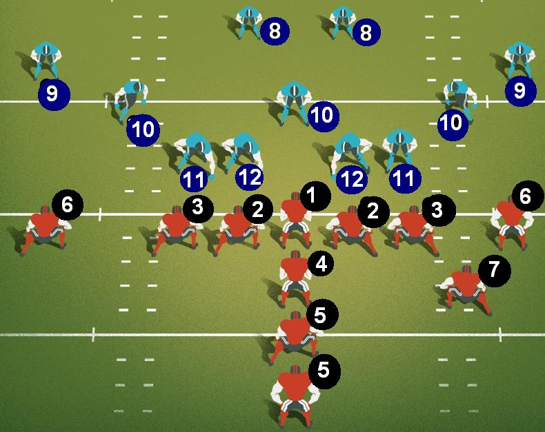

Formações no futebol americano

Ataque
Center (C): responsável pelo snap e por bloquear os defensores.
Offensive Guards (OG): jogam junto ao center, e têm a missão de bloquear os defensores, para proteger o quarterback.
Offensive Tackles (OT): ficam na linha de ataque, mas são os que jogam nas pontas da mesma. Sua função é proteger o quarterback.
Tight-End (TE): jogador que bloqueia e também recebe passes, joga fora da linha ofensiva.
Wide-Receivers (WR): jogam abertos e se movimentam muito para receber um passe do quarterback.
Quarterback (QB): o cérebro do time, responsável pela organização das jogadas ofensivas, é ele quem faz os passes.
Running Backs (RB): corredores, correm ao receberem a bola atrás da linha de ataque.
Tailback (TB):
Fullback (FB): jogador que ajuda a defender o Quarterback, e corre para receber o passe do Quarterback.
Defesa
Defensive Tackles (DT): jogam no meio da linha de defesa.
Defensive Ends (DE): jogam nas pontas da linha de defesa.
Linebackers (LB): jogam logo atrás da linha de defesa, avançam para fazer tackles e as vezes fazem cobertura em passes curtos.
Cornerbacks (CB): "marcam" os wide-receivers.
Safeties (SS ou FS): responsáveis pela cobertura.
Página inicial